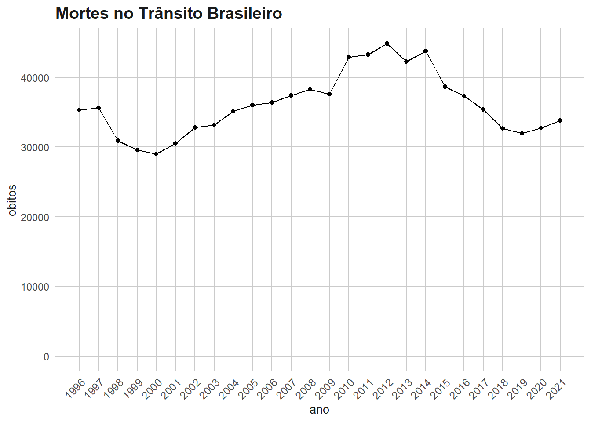

library(tidyverse)
library(microdatasus)
library(obsplot)
library(knitr)
library(readxl)Tratamento de Dados para Modelo Preditivo de Mortes
Dados de mortes no trânsito (DATASUS)
if (file.exists("data/datasus.rda")) {
load("data/datasus.rda")
} else {
df_datasus <- fetch_datasus(
year_start = 1996,
year_end = 2021,
information_system = "SIM-DOEXT",
vars = c("DTOBITO","CAUSABAS")
)
save(df_datasus, file = "data/datasus.rda")
}st_datasus <- df_datasus |>
filter(
str_detect(CAUSABAS, paste(paste0("V", seq(0, 8, 1)), collapse = "|"))
) |>
mutate(
datas = as.character(DTOBITO),
ano = as.numeric(str_sub(datas, -4, -1))
)
# st_datasus
knitr::kable(head(st_datasus))| DTOBITO | CAUSABAS | datas | ano |
|---|---|---|---|
| 27011996 | V899 | 27011996 | 1996 |
| 11011996 | V892 | 11011996 | 1996 |
| 13011996 | V892 | 13011996 | 1996 |
| 13011996 | V892 | 13011996 | 1996 |
| 06011996 | V892 | 06011996 | 1996 |
| 23011996 | V099 | 23011996 | 1996 |
obitos_ano <- st_datasus |>
count(ano, name = "obitos") |>
as_tibble()
kable(obitos_ano)| ano | obitos |
|---|---|
| 1996 | 35281 |
| 1997 | 35620 |
| 1998 | 30890 |
| 1999 | 29569 |
| 2000 | 28995 |
| 2001 | 30524 |
| 2002 | 32753 |
| 2003 | 33139 |
| 2004 | 35105 |
| 2005 | 35994 |
| 2006 | 36367 |
| 2007 | 37407 |
| 2008 | 38273 |
| 2009 | 37594 |
| 2010 | 42844 |
| 2011 | 43256 |
| 2012 | 44812 |
| 2013 | 42266 |
| 2014 | 43780 |
| 2015 | 38651 |
| 2016 | 37345 |
| 2017 | 35375 |
| 2018 | 32655 |
| 2019 | 31945 |
| 2020 | 32716 |
| 2021 | 33813 |
ggplot(obitos_ano, aes(x = ano, y = obitos)) +
geom_point() +
geom_line() +
scale_x_continuous(breaks = seq(1996, 2021, 1)) +
scale_y_continuous(limits = c(0, NA)) +
theme_obs() +
theme(axis.text.x = element_text(angle = 45, vjust = 1, hjust = 1)) +
ggtitle("Mortes no Trânsito Brasileiro")
Sinistros em rodovias federais (PRF)
Função de extração:
datatran_extract <- function(df) {
acidentes <- df |>
select(
data_inversa,
mortos,
feridos,
classificacao_acidente
) |>
mutate(
ano = case_when(
is.character(data_inversa) ~ year(dmy(data_inversa)),
!is.character(data_inversa) ~ year(data_inversa)
),
classificacao_acidente = case_when(
classificacao_acidente %in% c("(null)","Ignorado",NA) & mortos > 0 ~ "Com Vítimas Fatais",
classificacao_acidente %in% c("(null)","Ignorado",NA) & mortos == 0 & feridos > 0 ~ "Com Vítimas Feridas",
classificacao_acidente %in% c("(null)","Ignorado",NA) & mortos == 0 & feridos == 0 ~ "Sem Vítimas",
TRUE ~ classificacao_acidente
)
)
mortes <- acidentes |>
group_by(ano) |>
summarise(
qnt_acidentes = n(),
qnt_acidentes_fatais = sum(classificacao_acidente == "Com Vítimas Fatais"),
qnt_feridos = sum(feridos),
qnt_mortos = sum(mortos)
)
return(mortes)
}Função que importa todos os anos e aplica a extração. Ao criar uma função, você não precisa se preocupar em ficar usando rm() no enviroment global, todo o calculo temporário fica no environemt local da função.
arrange_datatran <- function() {
k <- seq(2007, 2021, 1)
enderecos_datatran <- paste(
"datatran/datatran", k ,"/datatran", k, ".csv", sep = ""
)
#criação de loop para a importação de todos os anos
for (i in enderecos_datatran) {
df_temp <- read_csv2(i, locale = locale(encoding = "latin1")) |>
datatran_extract()
if (exists("datatran_anos")) {
datatran_anos <- bind_rows(datatran_anos, df_temp)
} else {
datatran_anos <- df_temp
}
}
return(datatran_anos)
}
sinistros_prf <- arrange_datatran()Número de condutores (RENACH)
Importação dos endereços
enderecos_condutores <- paste(
"dados_cnh/cnh_xl/",
list.files("dados_cnh/cnh_xl/"),
sep = ""
)Função que importa e trata o dataset
num <- 4
import_cnh <- function(endereco) {
df <- read_excel(
endereco,
range = cell_cols("N:"),
sheet = 1
)
if (colnames(df) != "Total") {
df <- read_excel(
endereco,
range = cell_cols("S:"),
sheet = 1
)
}
df <- df[-(1:nrow(df)-1),] |>
lapply(as.numeric) |>
as.data.frame()
df$ano <- endereco |>
str_sub(41,44) |>
as.numeric()
return(df)
}
import_cnh(enderecos_condutores[num]) |> kable()| Total | ano |
|---|---|
| 62658577 | 2014 |
Script para importação de todos os anos
if ("n_condutores" |> exists()) {
rm("n_condutores")
}
for(i in enderecos_condutores) {
if ("n_condutores" |> exists()) {
n_condutores <- rbind(n_condutores, import_cnh(i))
}
else {
n_condutores <- import_cnh(i)
}
}
n_condutores |> kable()| Total | ano |
|---|---|
| 53885601 | 2011 |
| 56749646 | 2012 |
| 59604073 | 2013 |
| 62658577 | 2014 |
| 65316146 | 2015 |
| 67629344 | 2016 |
| 69729348 | 2017 |
| 71787294 | 2018 |
| 73844088 | 2019 |
| 75028871 | 2020 |
| 77122865 | 2021 |
| 79921178 | 2022 |
População (IBGE)
Importação dos endereços dos dados
enderecos_pop <- paste(
"dados_pop/populacao/",
list.files("dados_pop/populacao/"),
sep = ""
)Função de importação dos datasets
num <- 8
import_pop <- function(endereco) {
try(
return(
read_excel(
endereco,
sheet = 2,
range = cell_cols("B:"),
col_names = "total"
) |>
slice(1) |>
mutate(
ano = str_sub(endereco,24,27) |>
as.numeric()
)
)
)
try(
return(
read_excel(
endereco,
sheet = 1,
range = cell_cols("A:E")
) |>
filter(!row_number() %in% c(1,2)) |>
select(last_col())
)
)
}
teste <- import_pop(enderecos_pop[num])Error : Can't retrieve sheet in position 2, only 1 sheet(s) found.teste# A tibble: 5,511 × 1
...5
<dbl>
1 25257
2 9770
3 12348
4 18685
5 75098
6 12891
7 7832
8 4980
9 75862
10 8846
# ℹ 5,501 more rows# df <- df[-(2:nrow(df)),] |>
# mutate(
# ano = str_sub(endereco,24,27) |>
# as.numeric()
# )